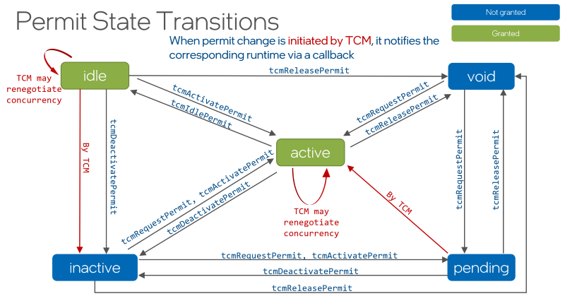

TCM Developer Guide#
Usage Model#
Below is a simple example of a usage model a parallel runtime should follow to successfully use TCM.
Include
tcm.hheader file and link the TCM library with the project.#include "tcm.h"
Note
If necessary, adjust project settings so that the compiler can find the
tcm.hheader file and the TCM library when building and linking the project.Register a client, providing a callback function to react on permit changes.
tcm_client_id_t client_id; tcmConnect(client_callback, &client_id);
Describe the resources needed using the
tcm_permit_request_tdata structure.tcm_permit_request_t request = TCM_PERMIT_REQUEST_INITIALIZER;
Note
To describe a portion of platform resources adjust the fields of the
tcm_permit_request_tobject accordingly. Refer to Permit Requests section of the TCM API Reference for more info.Request a permit for resources.
uint32_t grant = 0; tcm_permit_t permit { &grant, /*cpu_masks*/nullptr, /*size*/1, /*state*/{}, /*flags*/{} }; tcm_permit_handle_t permit_handle = nullptr; tcmRequestPermit(client_id, request, callback_arg, &permit_handle, &permit);
Note
The
tcmRequestPermitfunction might result in the permit switching to theTCM_PERMIT_STATE_PENDINGstate, meaning that the requested resources are being used by another permit, and the requesting side should wait until TCM is able to satisfy the permit, hence activating it and notifying the client through invocation of a client callback.Once the permit is activated, register the number of threads that were suggested by TCM.
uint32_t suggested_concurrency = permit.concurrencies[0]; // Wake up suggested_concurrency number of threads and register them with // the permit tcmRegisterThread(permit_handle); // Invoked by each participating thread
Deactivate, activate, and re-request the permit depending on the resources usage model.
// Once processing block ends, deactivate the permit tcmDeactivatePermit(permit_handle); // Activate permit when processing begins again tcmActivatePermit(permit_handle); // Re-request if desired number of threads changes tcmRequestPermit(client_id, new_request, callback_arg, &existing_permit_handle, &permit);
Note
Similarly to the
tcmRequestPermitfunction, a call totcmActivatePermitmight result in the permit switching to theTCM_PERMIT_STATE_PENDINGstate, meaning that the requested resources are being used by another permit. In this case, the requesting side should wait until TCM is able to satisfy the permit, hence activating it and notifying the client through invocation of a client callback.Unregister threads and release permit once its resources are no longer needed.
// By each thread, which was previously registered with the permit, run tcmUnregisterThread(); // Invoke once tcmReleasePermit(permit_handle);
Disconnect from TCM when resource coordination is no longer planned.
tcmDisconnect(client_id);
Note
When running an application that uses TCM, set the
TCM_ENABLE=1environment variable to actually enable its use.
Refer to TCM API Reference to find more detailed information about TCM API.
See also TCM usage examples to learn by example.
Permit State Transitions#
The diagram below shows the possible transitions of a permit state. Black arrows show state
transitions when the TCM API is invoked by a client, while red arrows show state transitions
initiated by TCM. Whenever a change is not initiated by a client itself, the client is notified
through invocation of a callback function that was registered during the call to tcmConnect.


Resource Permits and Teams of Threads#
The table below shows the relationships between permit state, team of threads, and whether the resources described by a permit are allowed to be used or not.
Resource permit:
Requested by language runtime (RT)
Granted by TCM
Includes maximum concurrency and CPU mask (if
tcm_cpu_constraints_twas specified)The the size of the CPU mask may be different from the concurrency
Team of threads
Managed by language RT
Should only be active with a valid resource permit
Permit State |
Resource usage |
Thread Team State |
Reactivation Speed |
|---|---|---|---|
Void/No permit |
Not allowed |
Cold: Team sleeping or disbanded. No Language RT configuration maintained. |
Slow |
Inactive |
Not allowed |
Warm: Team not actively consuming CPU resources. Some configuration for Language RT is maintained. |
Fast - if reclaimed by Language RT |
Pending |
Not allowed |
Warm or Cold. Language RT waits for the permit to be granted. |
|
Idle |
Allowed |
Hot: Team is at quiescent point, might actively spin. Highly configured for Language RT. |
Fastest |
Active |
Allowed (permit granted) |
Active: Team is executing tasks for Language RT. Highly configured for Language RT. |
(Already Active) |
Composition Scenarios#
The section describes various composition scenarios of parallel runtimes that can occur at runtime providing details on possible transition of CPU resources between them.
Sequential Requests#
This represent composition of TCM permit requests where one or more clients request resources one after the other.
#pragma omp parallel for
for(int i = 0; i < 100; ++i) {
/*OpenMP threads working*/
}
tbb::parallel_for(0, 100, [](int) {
/*TBB threads working*/
});
#pragma omp parallel for
for(int i = 0; i < 100; ++i) {
/*OpenMP threads working again*/
}
At every moment of time the resources are meant to be used by only one parallel runtime.
Although this represents the simplest composition scenario, it is still can benefit from using the
Thread Composability Manager. This is because usually resources are not released immediately after a
parallel region, but remain in use for some time anticipating new parallel work to appear soon. It
is important to notify TCM about such a situation through a call to tcmIdlePermit so that
the corresponding resources can be re-used by subsequent requests from possibly another runtime.
Concurrent Requests#
Concurrent permit requests for resources appear when two or more clients request resources concurrently and independently. No client makes new requests while holding one.
std::thread omp_call([&] {
#pragma omp parallel for num_threads(P1)
for(int i = 0; i < 100; ++i) {
/*OpenMP threads working*/
}
});
std::thread tbb_call([&] {
tbb::task_arena a(P2);
a.execute([&] {
tbb::parallel_for(0, 100, [](int) {
/*TBB threads working*/
});
});
});
omp_call.join();
tbb_call.join();
Concurrent requests can be subdivided into two possible scenarios:
Uncoordinated requests
Requests are not coordinated and may compete for the same resources.
Perfect or hierarchical concurrency.
Multiple resource requests are spread across available resources with no oversubscription. For example, each request is done for cores in a separate NUMA domain.
Nested Requests#
A nested permit request corresponds to a situation when a client requests a permit for resources while holding and using another permit from a previous request.
tbb::parallel_for(0, 100, [](int) {
/*TBB threads working*/
#pragma omp parallel for
for(int i = 0; i < 100; ++i) {
/*OpenMP threads working*/
}
});
Possible scenarios:
Agnostic nesting.
Each level requests parallelism independently, as if it was alone. This is the typical case of oneAPI Math Kernel Library (oneMKL) calls nested in oneAPI Threading Building Blocks (oneTBB) calls.
Perfect or hierarchical nesting.
The outer level limits its concurrency, requesting widely spread resources (e.g. one core per every socket), under the assumption/knowledge about inner levels utilizing “close” resources (e.g. all cores in a socket).
Combined Use Cases#
Combined use cases include sequential, concurrent, and nested use cases mixed in the code.
#pragma omp parallel for
for(int i = 0; i < 100; ++i) {
/*OpenMP threads working*/
}
tbb::parallel_for(0, 100, [](int) {
/*TBB threads working*/
#pragma omp parallel for
for(int i = 0; i < 100; ++i) {
/*OpenMP threads working again*/
}
});
Usage examples#
Examples below demonstrate the use of TCM in various scenarios. Parallelism in these examples is achieved through functional decomposition where the initial amount of work is split among threads participating in computation.
The examples below use the following helper function that returns an object of tcm_permit_t
type. This structure is filled by TCM when its client wants to read the current state of a permit
data.
tcm_permit_t make_permit(uint32_t& grant) {
return tcm_permit_t{
&grant, /*cpu_masks*/nullptr, /*size*/1, /*state*/{}, /*flags*/{}
};
}
Ad hoc parallelism#
The simplest way to do computations in parallel is to create a bunch of threads, split the work among these threads, and wait for them to finish. Such instantiated threads are usually busy only with the useful work they are given, not distracting themselves on other non-payload activities. This prevents them from reacting to changes to resource permissions that are communicated by TCM. The example that follows demonstrates the use of TCM for such ad hoc scenarios.
If resources are already occupied by another parallel runtime or concurrent invocation of the same parallel region, other clients using them would result in platform oversubscription. Therefore, a TCM client should wait until the requested resources become free and TCM decides to re-distribute them to this client. Once it is so, the permit is activated and TCM invokes the client’s callback function with a handle of the permit that has just been changed.
To signal changes in a permit back to a parallel region, this example uses the following structure:
struct sync_data_t {
std::mutex permit_mutex;
std::condition_variable permit_cv;
bool permit_activated{false};
};
A pointer to an instance of this structure is passed to the callback function as the value for its
callback_arg parameter.
Because threads in fixed parallel regions cannot react to changes to recommendations of resources usage, the negotiation callback function is only needed to signal a parallel region about activation of its permit, and can be written as the following:
tcm_result_t negotiation_callback(tcm_permit_handle_t ph, void* arg,
tcm_callback_flags_t /*invocation_reason*/) {
uint32_t grant = 0;
tcm_permit_t permit = make_permit(grant);
tcmGetPermitData(ph, &permit);
if (permit.flags.stale)
// Read data is being changed, wait for another callback invocation
return TCM_RESULT_SUCCESS;
sync_data_t& permit_data = *(sync_data_t*)arg;
if (TCM_PERMIT_STATE_ACTIVE == permit.state) {
// Permit has been activated, notify parallel region that requested
// resources are available for use
{
std::lock_guard<std::mutex> lock(permit_data.permit_mutex);
permit_data.permit_activated = true;
}
permit_data.permit_cv.notify_one();
}
return TCM_RESULT_SUCCESS;
}
The callback is invoked to notify the client about changes in its permit so that the client can
react to these changes accordingly. In this example, the client’s callback is called once the permit
is activated. The negotiation callback function above demonstrates how to read permit data properly.
The tcmGetPermitData function can return data of a permit that is concurrently changing.
This is indicated by tcm_permit_flags_t::stale bit flag, and it means that the callback is
going to be invoked one more time once changes to permit are finalized by TCM. Thus, the client
should abandon the data it has just read.
Besides splitting the work among instantiated threads, the main function in this example consults
with TCM to determine the number of threads it can use so that the platform is not oversubscribed.
To do so it connects to TCM, requests a permit, waits for it to be activated, and then reads the
recommended number of threads for use in the grant variable. Telling TCM that the permit
will not allow negotiations once it is activated is done by assigning 1 to the
tcm_permit_flags_t::rigid_concurrency flag while setting up the tcm_permit_request_t
structure for a permit request.
The first thing each thread does, before executing the work it is created for, is to register itself
with the permit, in which it participates. This is necessary to tell TCM that the thread consumes
one of the resources assigned to a permit, and is done by calling tcmRegisterThread
function, passing the instance of tcm_permit_handle_t whose resource this thread is going to
consume. At the end of its work, a thread unregisters itself from its permit by calling
tcmUnregisterThread.
Once all the threads finish with their task, the main thread releases the resources by calling the
tcmReleasePermit TCM function. This marks the resources described by the passed instance of
tcm_permit_handle_t as free, hence making them available for other clients.
Finally, the main thread disconnects from TCM, essentially telling it that the client won’t have future permit requests.
template <typename F> void parallel_compute(int start, int end, const F& f) {
uint32_t grant = 0;
tcm_client_id_t my_tcm_id = 0;
tcm_result_t result = tcmConnect(negotiation_callback, &my_tcm_id);
if (result != TCM_RESULT_SUCCESS) {
std::printf("Unsuccessful tcmConnect. Check TCM_ENABLE is set to 1\n");
std::abort();
}
tcm_permit_request_t request = TCM_PERMIT_REQUEST_INITIALIZER;
request.min_sw_threads = 1;
// Non-negotiable once permit is activated
request.flags.rigid_concurrency = 1;
sync_data_t callback_arg;
tcm_permit_handle_t ph{nullptr};
tcm_permit_t permit = make_permit(grant);
result = tcmRequestPermit(my_tcm_id, request, &callback_arg, &ph, &permit);
if (result != TCM_RESULT_SUCCESS) {
std::printf("Unsuccessful tcmRequestPermit.\n");
std::abort();
}
// Waiting for resource permit to be activated
while (permit.flags.stale || permit.state == TCM_PERMIT_STATE_PENDING) {
std::unique_lock<std::mutex> lock(callback_arg.permit_mutex);
callback_arg.permit_cv.wait(
lock, [&callback_arg] { return callback_arg.permit_activated; }
);
tcmGetPermitData(ph, &permit);
callback_arg.permit_activated = false;
}
const int ws = end - start;
const int thread_ws = ws / grant;
const uint32_t remainder = ws - thread_ws * grant;
std::vector<std::thread> threads;
for (uint32_t i = 0; i < grant; ++i) {
int end = start + thread_ws + int(i < remainder);
threads.emplace_back([start, end, &f, ph] {
tcmRegisterThread(ph);
for (int j = start; j < end; ++j) f(j);
tcmUnregisterThread();
});
start = end;
}
for(auto& t : threads)
t.join();
tcmReleasePermit(ph);
tcmDisconnect(my_tcm_id);
}
This is a basic example of TCM integration. Despite lacking functionality for dealing with overheads related to threads management and reacting to changes in utilization of resources from other clients, it demonstrates the main API calls parallel runtimes should use to make use of Thread Composability Manager and reduce otherwise potential CPU oversubscription.
Pool of Threads#
Below is a more complex example that demonstrates usage of TCM by a client_thread_pool class
that manages a pool of threads. Unlike the example from Ad hoc parallelism, this example creates
worker threads once, effectively re-using them to perform computations in parallel. A worker thread
executes tasks only while the pool holds a permit, and no more workers do so than the permit grants.
The thread pool reacts to changes to the permit by updating the grant, hence waking up missing
threads or putting excessive ones to sleep. The example also includes synchronization code that
allows invocation of a parallel computation concurrently with itself, making sure the resources are
not released while there is work to do.
In this section, we start by describing the state of the pool and its public interface. In section Permit management, we show how a single permit is managed by the pool across concurrent uses. The Worker pool section describes how worker threads are managed by waking them up and putting them to sleep in response to changes in the permit. The details of permit negotiation is described in the Negotiation callback section. While not directly relevant to TCM, the approach to assigning tasks to worker threads is shown in section Tasking.
The code re-uses the make_permit function from Ad hoc parallelism example to help prepare
the permit data structure to be filled by TCM.
Pool state#
The state of the pool described below is kept in the following data members. The entities can be divided into three categories:
Entities that help with managing threads: creation, waking, putting to sleep, and destruction.
Entities that help with managing tasks: enqueueing, dequeueing, and cancellation.
Entities that help with working with TCM: connecting, disconnecting, permit management, synchronization of permit updates.
// Worker pool internals
std::vector<std::thread> workers;
std::mutex pool_mutex;
std::condition_variable pool_cv;
static constexpr int shutting_down = -1;
int allowed_threads{0}; // How many workers the permit allows to run tasks
int running_threads{0}; // How many workers do run tasks
// Tasking internals, guarded by task_deque_mutex
std::deque<task_t> tasks;
std::mutex task_deque_mutex;
std::condition_variable task_deque_cv;
bool is_canceled{false};
// TCM related internals
tcm_client_id_t client_id{};
std::atomic<tcm_permit_handle_t> permit_handle{nullptr};
std::mutex permit_mutex;
std::condition_variable permit_cv;
unsigned permit_updates{0}; // Number of permit updates published so far
bool is_deactivating{false};
std::atomic<unsigned> concurrent_invocations{0};
std::atomic<unsigned> permit_epoch{0};
Pool interface#
The public interface of the pool consists of the parallel_for member function and the pool
lifetime management. The parallel_for function asks TCM for the concurrency it is allowed to
use, splits the given range into that many chunks, submits them as tasks, and waits for their
completion. Since the pool does not need the resources anymore once the work is done, it deactivates
the permit, thus letting TCM re-distribute the resources to other clients.
The constructor connects the client to TCM and creates the worker threads. Note that the workers are created eagerly, while the permit is requested lazily: the number of threads a pool owns is its own business, whereas the number of threads that are allowed to run simultaneously is negotiated with TCM.
The destructor stops the workers, releases the permit and disconnects from TCM.
class client_thread_pool {
public:
// Applies func to the [start, end) range, splitting it between as many
// threads as TCM grants. May be called from several threads concurrently.
template <typename F> void parallel_for(int start, int end, const F& func) {
const int work_size = end - start;
const int grant = static_cast<int>(request_permit());
// One chunk per granted thread, the remainder spread over the first ones
const int chunks = std::min(std::max(grant, 1), work_size);
std::vector<std::future<void>> futures;
futures.reserve(chunks);
for (int i = 0, from = start; i < chunks; ++i) {
const int size = work_size / chunks + (i < work_size % chunks);
futures.push_back(enqueue(func, from, from + size));
from += size;
}
// Wait for the work completion
for (auto& future : futures)
future.get();
deactivate_permit();
}
client_thread_pool() {
if (tcmConnect(negotiation_callback, &client_id) != TCM_RESULT_SUCCESS) {
std::cerr << "tcmConnect error. Check TCM_ENABLE is set to 1\n";
std::abort();
}
for (unsigned i = 0; i < std::thread::hardware_concurrency(); ++i)
workers.emplace_back(&client_thread_pool::worker_routine, this);
}
~client_thread_pool() {
cancel_tasks();
shut_down_pool();
for (auto& worker : workers)
worker.join();
if (tcm_permit_handle_t handle = permit_handle.load())
tcmReleasePermit(handle);
tcmDisconnect(client_id);
}
Permit management#
Unlike the example from the Ad hoc parallelism section, this pool keeps a single permit for its
whole lifetime: tcmRequestPermit creates a permit when it is given a null handle and re-uses
the permit the handle refers to otherwise. Also, several parallel_for calls may be running
concurrently in the same pool, so they share that permit: the first of them requests it, the others
only wait until it becomes usable, and the last one to finish deactivates it.
A permit is usable when it is activated by TCM, that is, its state equals
TCM_PERMIT_STATE_ACTIVE, and the data read for it is not marked with the
tcm_permit_flags_t::stale flag. Waiting for such a state is done through the
permit_updates counter, which is incremented every time new permit data is published, either
by a permit request or by the negotiation callback. Reading the counter before reading the permit
data guarantees that an update, which happens in between, is not missed.
Once the permit data is read successfully, the granted concurrency is applied to the pool. Because
several threads may read the permit data concurrently, each read takes a value of the
permit_epoch counter, and only the newest read is allowed to publish the grant it has
observed. The permit handle is stored before the grant is published, since the workers, which are
woken up by the new grant, register themselves with that handle.
private:
// ------------------------------- Permit -------------------------------
// Makes sure the pool holds a permit and returns the concurrency it grants.
// Concurrent parallel_for calls share a single permit: the first of them
// requests it, the others only wait for it to become usable.
uint32_t request_permit() {
uint32_t grant = 0;
tcm_permit_t permit = make_permit(grant);
if (1 == ++concurrent_invocations)
send_permit_request(permit);
wait_until_permit_is_usable(permit);
return grant;
}
void send_permit_request(tcm_permit_t& permit) {
{
// The pool reuses one permit, so a new request must not overlap
// with the deactivation of the previous one
std::unique_lock<std::mutex> permit_lock(permit_mutex);
permit_cv.wait(permit_lock, [this]{ return !is_deactivating; });
}
tcm_permit_request_t request = TCM_PERMIT_REQUEST_INITIALIZER;
request.min_sw_threads = 1;
// TCM creates a permit for a null handle and reuses the permit the
// handle refers to otherwise, so the pool keeps one permit for its life
tcm_permit_handle_t handle = permit_handle.load();
if (tcmRequestPermit(client_id, request, /*callback_arg*/this,
&handle, &permit) != TCM_RESULT_SUCCESS) {
std::cerr << "tcmRequestPermit returned error\n";
std::abort();
}
permit_handle.store(handle);
notify_permit_update();
}
// Waits for TCM to make the permit usable and applies its grant to the pool
void wait_until_permit_is_usable(tcm_permit_t& permit) {
std::unique_lock<std::mutex> permit_lock(permit_mutex);
// Count the updates seen before the permit data is read, so that an
// update published while it is being read is not missed
unsigned observed_updates = permit_updates;
while (true) {
tcm_permit_handle_t handle = permit_handle.load();
permit_lock.unlock();
// The permit may already be usable, for example when another thread
// has requested it
if (handle && read_permit_data(handle, permit))
return;
permit_lock.lock();
permit_cv.wait(permit_lock, [this, observed_updates] {
return permit_updates != observed_updates; });
observed_updates = permit_updates;
}
}
// Reads the current permit data. Returns true if the data is usable, in
// which case the granted concurrency is applied to the pool.
bool read_permit_data(tcm_permit_handle_t handle, tcm_permit_t& permit) {
// Only the newest read publishes what it has read
const unsigned epoch = ++permit_epoch;
tcmGetPermitData(handle, &permit);
if (permit.state != TCM_PERMIT_STATE_ACTIVE || permit.flags.stale)
// The permit cannot be used yet: either TCM has not satisfied the
// request, or the data was outdated by a concurrent renegotiation
// and has to be read again.
return false;
// Workers register with the handle, so it must be visible to them
// before the grant that lets them run.
permit_handle.store(handle);
publish_grant(*permit.concurrencies, epoch);
return true;
}
void deactivate_permit() {
{
std::lock_guard<std::mutex> permit_lock(permit_mutex);
is_deactivating = true;
}
// The last of the concurrent parallel_for calls deactivates the permit
if (--concurrent_invocations == 0) {
tcmDeactivatePermit(permit_handle.load());
revoke_grant();
}
{
std::lock_guard<std::mutex> permit_lock(permit_mutex);
is_deactivating = false;
}
permit_cv.notify_all();
}
void notify_permit_update() {
{
std::lock_guard<std::mutex> permit_lock(permit_mutex);
++permit_updates;
}
permit_cv.notify_all();
}
Worker pool#
The pool of threads translates the permit grant into the number of workers that are allowed to run
tasks. The allowed_threads variable holds that number, and the workers, which do not fit
into it, keep sleeping on the pool_cv condition variable. Increasing the grant wakes up the
missing threads, while revoking it puts the excessive ones to sleep as soon as they complete the
tasks they are busy with.
Each worker registers itself with the permit by the tcmRegisterThread call before it starts
taking tasks, and unregisters itself by the tcmUnregisterThread call once it has no more
tasks to do. Therefore, a thread is known to TCM only for the time it actually consumes the
resources described by the permit.
// ----------------------------- Worker pool ----------------------------
using task_t = std::packaged_task<void()>;
// Lets 'grant' workers run tasks. The epoch check drops a grant that a
// newer read of the permit data has already superseded.
void publish_grant(uint32_t grant, unsigned epoch) {
std::lock_guard<std::mutex> pool_lock(pool_mutex);
if (allowed_threads != shutting_down && epoch == permit_epoch) {
allowed_threads = static_cast<int>(grant);
pool_cv.notify_all();
}
}
// Without a permit the pool is not allowed to run any worker
void revoke_grant() {
std::lock_guard<std::mutex> pool_lock(pool_mutex);
if (allowed_threads != shutting_down)
allowed_threads = 0;
}
void shut_down_pool() {
{
std::lock_guard<std::mutex> pool_lock(pool_mutex);
allowed_threads = shutting_down;
}
pool_cv.notify_all();
}
// Blocks until the permit allows one more worker to run tasks.
// Returns false if the pool is shutting down and the worker must finish.
bool wait_to_join_pool() {
std::unique_lock<std::mutex> pool_lock(pool_mutex);
pool_cv.wait(pool_lock, [this] {
return allowed_threads == shutting_down
|| running_threads < allowed_threads; });
if (allowed_threads == shutting_down)
return false;
++running_threads;
return true;
}
void leave_pool() {
std::lock_guard<std::mutex> pool_lock(pool_mutex);
--running_threads;
}
void worker_routine() {
while (wait_to_join_pool()) {
// A worker is known to TCM only while it runs tasks
tcmRegisterThread(permit_handle.load());
task_t task;
while (get_task(task))
task();
tcmUnregisterThread();
leave_pool();
}
}
Tasking#
The tasking part of the pool is not related to TCM, and is shown for completeness. It is a simple
deque of tasks, which is filled by the parallel_for function and is drained by the workers.
The only TCM related detail here is that a worker does not wait for new tasks indefinitely: if no
work appears for a while, get_task gives up so that the worker can leave the pool and stops
being counted by TCM as a thread that uses the resources.
// ------------------------------- Tasking ------------------------------
template <typename F>
std::future<void> enqueue(const F& func, int from, int to) {
task_t task{[func, from, to]{ func(from, to); }};
std::future<void> future = task.get_future();
{
std::lock_guard<std::mutex> task_lock(task_deque_mutex);
tasks.push_back(std::move(task));
}
task_deque_cv.notify_one();
return future;
}
// Takes the next task. Returns false if the pool is being destroyed, or if
// no work has appeared for a while: an idle worker leaves the pool so that
// TCM stops counting it as running.
bool get_task(task_t& task) {
std::unique_lock<std::mutex> task_lock(task_deque_mutex);
task_deque_cv.wait_for(task_lock, std::chrono::milliseconds(100),
[this]{ return !tasks.empty() || is_canceled; });
if (is_canceled || tasks.empty())
return false;
task = std::move(tasks.back());
tasks.pop_back();
return true;
}
void cancel_tasks() {
{
std::lock_guard<std::mutex> task_lock(task_deque_mutex);
is_canceled = true;
}
task_deque_cv.notify_all();
}
Negotiation callback#
TCM invokes the negotiation callback to notify the pool that its permit has changed. When the change is about the granted concurrency, the callback re-reads the permit data, which also applies the new grant to the pool, hence waking up the missing workers or putting the excessive ones to sleep. In any case, the callback publishes a permit update so that the threads waiting for the permit to become usable re-examine its data.
tcm_result_t negotiation_callback(tcm_permit_handle_t permit_handle, void* arg,
tcm_callback_flags_t invocation_reason)
{
client_thread_pool& pool = *static_cast<client_thread_pool*>(arg);
if (invocation_reason.new_concurrency) {
uint32_t grant = 0;
tcm_permit_t permit = make_permit(grant);
pool.read_permit_data(permit_handle, permit);
}
// Wake up the threads that wait for the new permit data
pool.notify_permit_update();
return TCM_RESULT_SUCCESS;
}
This example demonstrates how a parallel runtime, which manages a pool of threads, can adjust the number of threads it runs to the resources TCM grants it, both when the permit is requested and when TCM renegotiates it later.
Full code of the example is available here.